Killer Climber Samurai
Press kit · An ink-painted samurai roguelite for iPhone and iPad
The game
Slash demon bosses, dash through yokai and climb a tower that changes every time you play.
The tower changes shape every night. The shadow that killed your master waits at the top. One sword, one chance: die, and you fall back to the bottom, but you remember something.
- Fast, fluid combat: parry, dash, execute, air combos.
- 70+ cards and 22 paths: three cards of one class wake a path with its own living card; five bring its mastery.
- Every climb is different: a procedural tower, 9 biomes, guardians and caves.
- Nine ink-painted biomes that breathe: lightning over the storm sea, eyes in the silk caves, lanterns rising over the night city.
- Painted in washi paper and indigo, with vermilion as the one accent.
- The Daily Board: the same tower for everyone each day, and a prize for yesterday's best.
- Duel a friend: send a short code, race up the same tower for 5 minutes, then fight on the temple roof.
- Kiyomori waits at the summit: three endings shaped by how you climbed, then the Endless Tower.
- A second weapon, the spear, and the Guardian Road: five guardians in a row against the clock.
- The Soul Tree: 4 branches, 51 roots and 3 crowns of lasting growth.
- Game Center: 3 leaderboards and 28 achievements.
- Photo mode and Best Moments: the finest kills saved as GIFs.
- Playable with one hand, with haptics and accessibility options.
New in 1.7: The Tower Remembers You
The biggest update since launch. The tower remembers each player, so every climb and every day gives a reason to come back.
- Grudges: the yokai that beats you takes a name and waits for you on your next climb. If it beats you again it grows stronger; beat it and it drops a card orb.
- The tower speaks: the death scroll, the zone gates and Bunbuku the trader remember your climbs.
- The day's mood: each day the tower has its own weather under the real phase of the moon, then tomorrow's omen.
- Kensei's Book: 12 secret techniques, each written in with a brush when you pull it off.
- The Oni's Trial: last through a short arena without being hit and the souls you carry are doubled.
- New art: four yokai drawn again by hand (the Oni-Taiko, the Yurei, the Chochin-obake and the Jorogumo spawn); the Kubi-kiri's frames reworked.
- Weightier combat, finer touch controls and a renewed interface.
- Season 2, Obon Lights, runs until 7 December 2026; Season 3, Bamboo Wind, follows on 7 December with two looks to earn on the free season road.
Earlier: 1.6.1 (23 October) brought a short talking first lesson with Bunbuku and HOW TO PLAY.
App Store preview
The video on the App Store page today: 24 seconds of whole, unedited 1.7 frames cut to the game's own taiko, from the Drummer Oni to a yokai that waits for you by name, 1920×886. Download the MP4 (33 MB). The 1.6.1 preview: MP4 (32 MB).
App Store pictures (1.7)
The ten pictures on the App Store page today, in its order: each is a whole, unedited frame of the game, with a caption band above it. Each links to the full-size iPhone PNG (2796×1290).

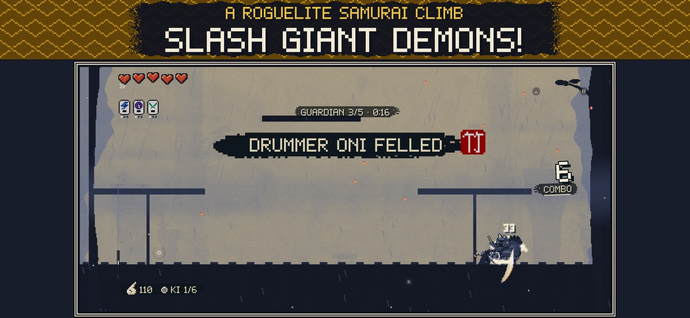

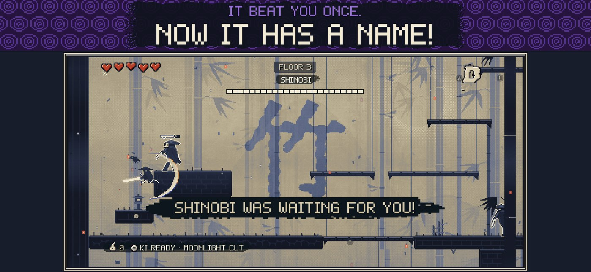

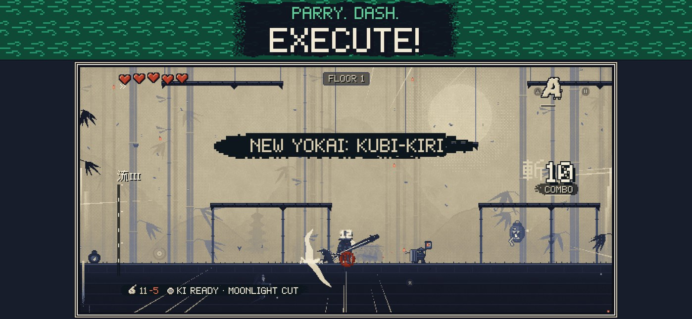

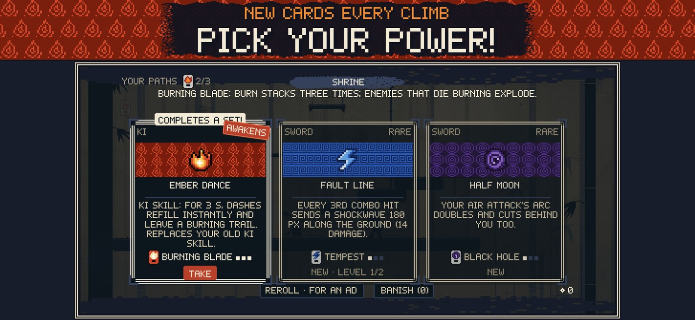

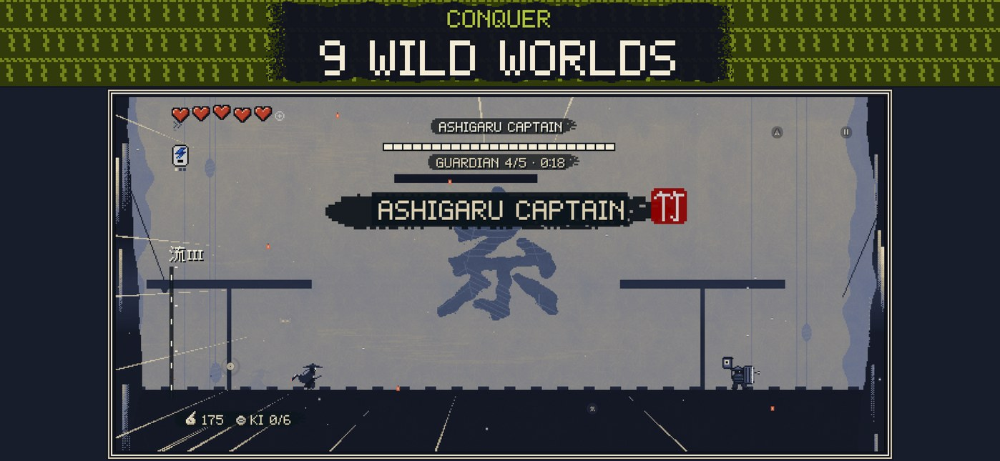

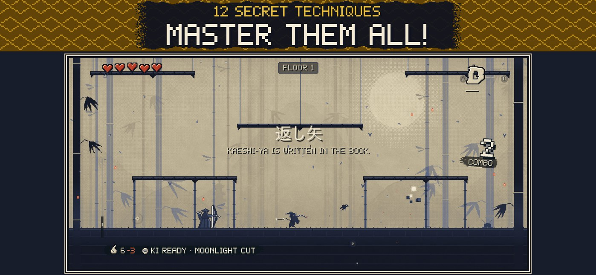

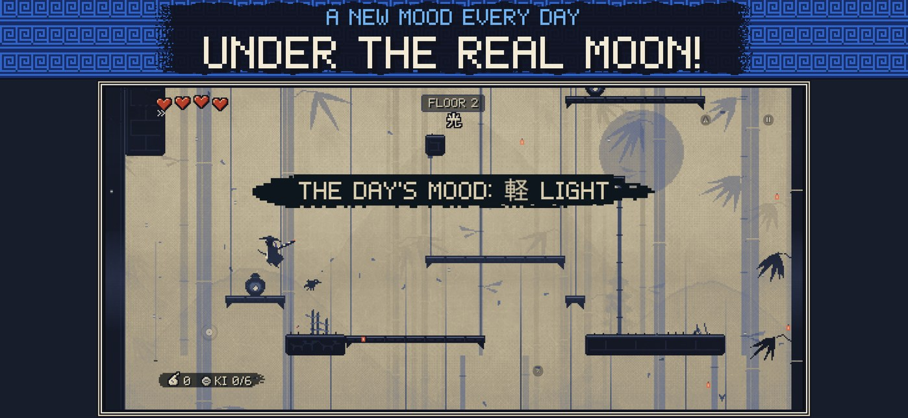

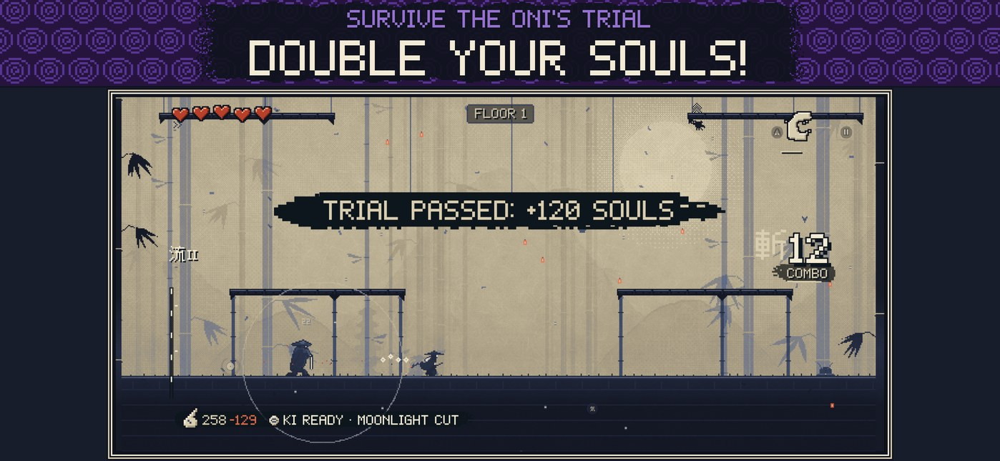

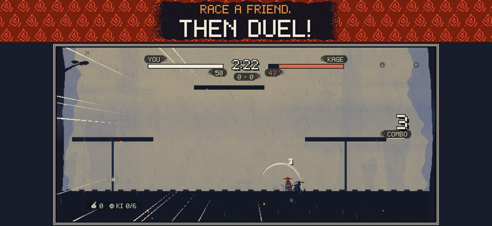

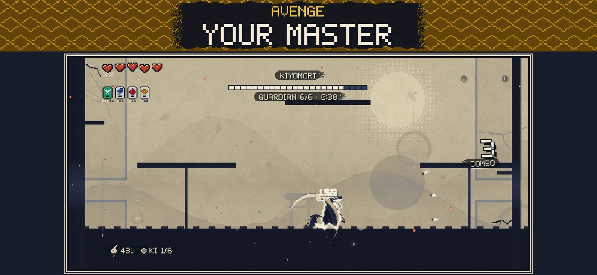
The same ten pictures for iPad (2752×2064): 1 · 2 · 3 · 4 · 5 · 6 · 7 · 8 · 9 · 10


The 1.6.1 pictures (nine, iPhone): 1 · 2 · 3 · 4 · 5 · 6 · 7 · 8 · 9


Screenshots (version 1.4)
Whole, unedited frames of the game from version 1.4 (October 2026) on a 6.9-inch iPhone. Each links to the full-size PNG (2236×1032).

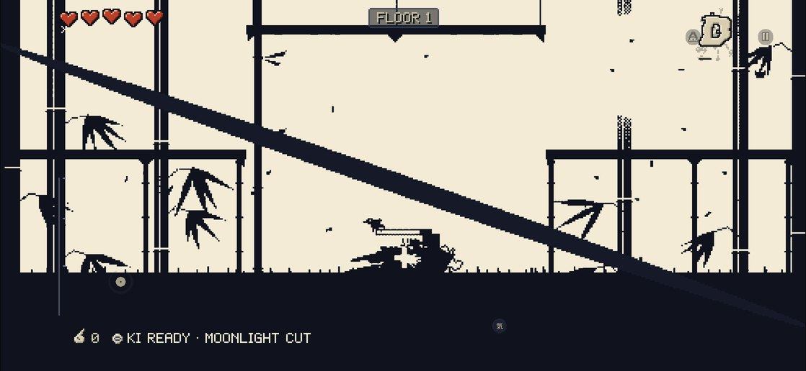

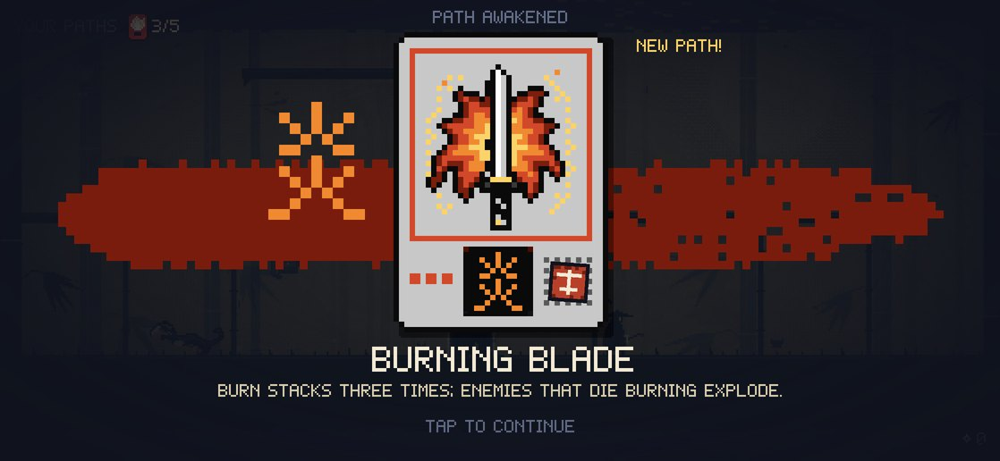

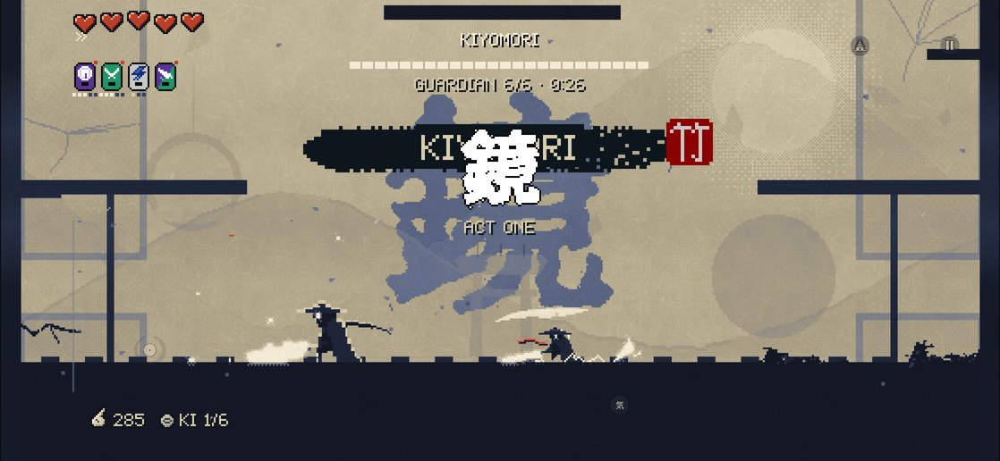

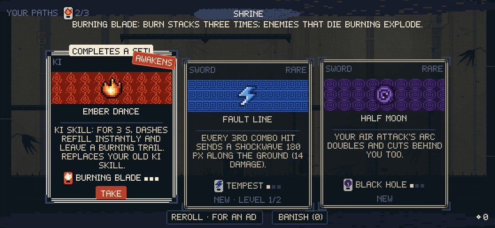

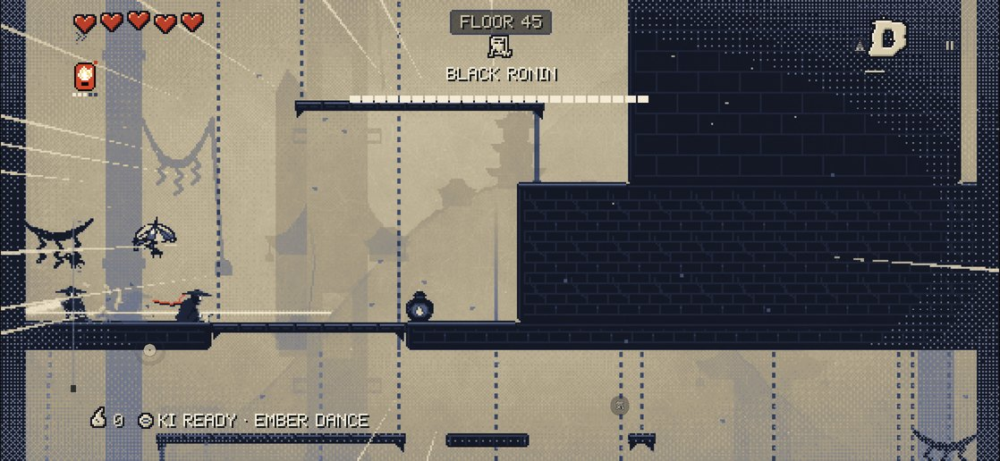

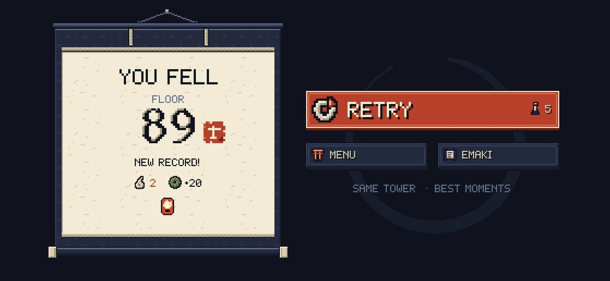

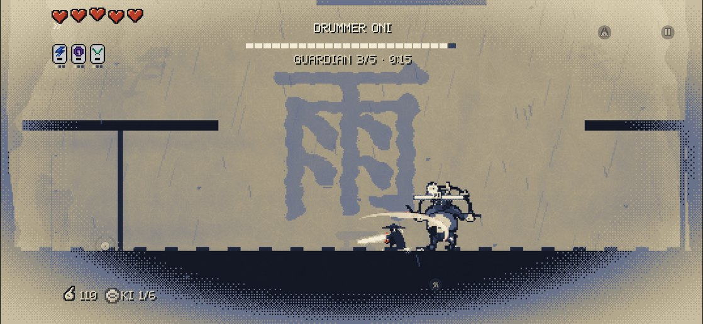

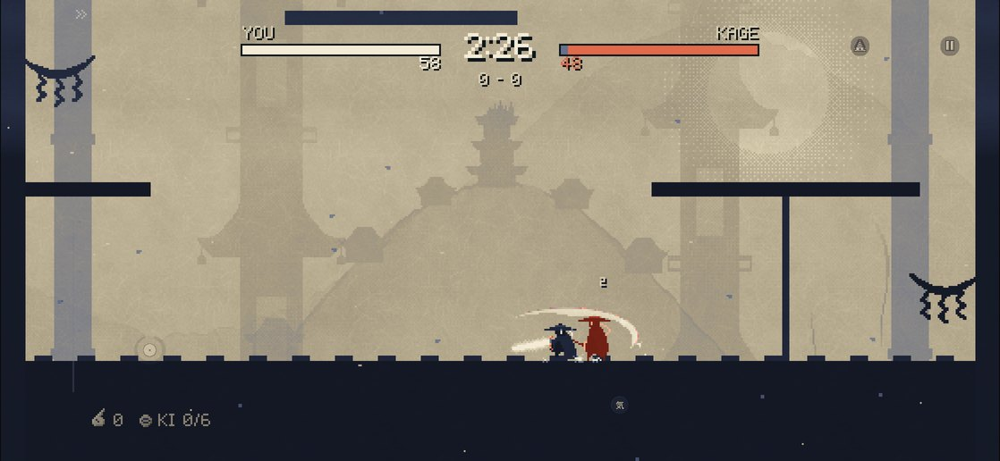

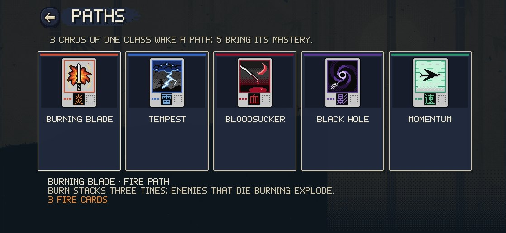
Icon
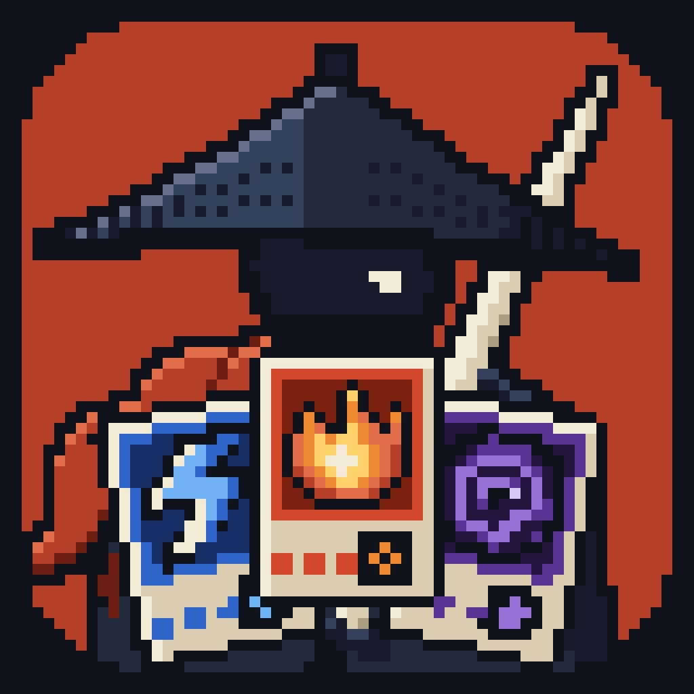
The app icon since version 1.6.0 (1024×1024 PNG).
About the developer
Akif Bay is an independent solo developer from Türkiye. He made Killer Climber Samurai alone, in Unity; the game and its App Store page are in 10 languages.
All images and video on this page may be used in coverage of the game. For interviews, questions or anything else, write to doktoburu@proton.me.
Türkçe kısa bilgi
Killer Climber Samurai, Türkiye'den tek kişilik geliştirici Akif Bay'in mürekkep ve washi kâğıdı üslubunda, piksel sanatlı samuray aksiyon roguelite'ı. Oyuncu her gece şekil değiştiren bir kuleye tek kılıçla tırmanıyor: 9 bölge, bölge bekçileri, 70'ten fazla kart, 22 yol, arkadaşla düello, herkese aynı Günlük Tablo ve 5 dakikalık kısa tırmanış var. App Store editörleri oyunu 9–21 Ekim 2026'da 155 ülke ve bölgede "New Games We Love" seçkisine aldı. 1.7 "Kule seni hatırlar" (@Y_DATE_TR@) oyunun çıkıştan beri en büyük güncellemesi: seni yenen yokai bir ad alıyor ve bir sonraki tırmanışında seni bekliyor; kule her gün gerçek ayın altında başka bir mizaca bürünüyor; Kensei Defteri 12 gizli teknik saklıyor; Oni Sınavı'nda vurulmadan dayanırsan ruhun ikiye katlanıyor; Davulcu Oni'yle birlikte dört yokai elle yeniden çizildi. 2. Sezon "Obon Işığı" 7 Aralık'a dek sürüyor, ardından 3. Sezon "Bambu Rüzgârı" geliyor. Oyun iPhone ve iPad'de, 10 dilde ve ücretsiz; satılan hiçbir şey güç vermiyor.
Bu sayfadaki görseller ve fragman haberlerde kullanılabilir. İletişim: doktoburu@proton.me